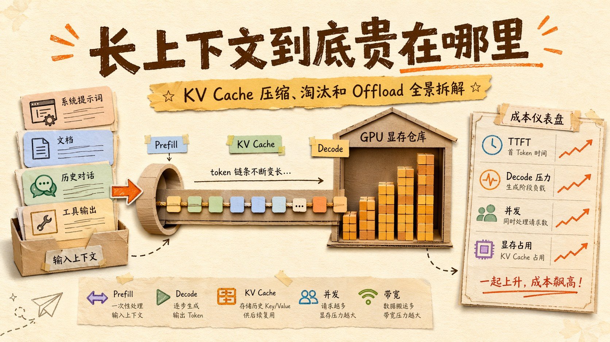
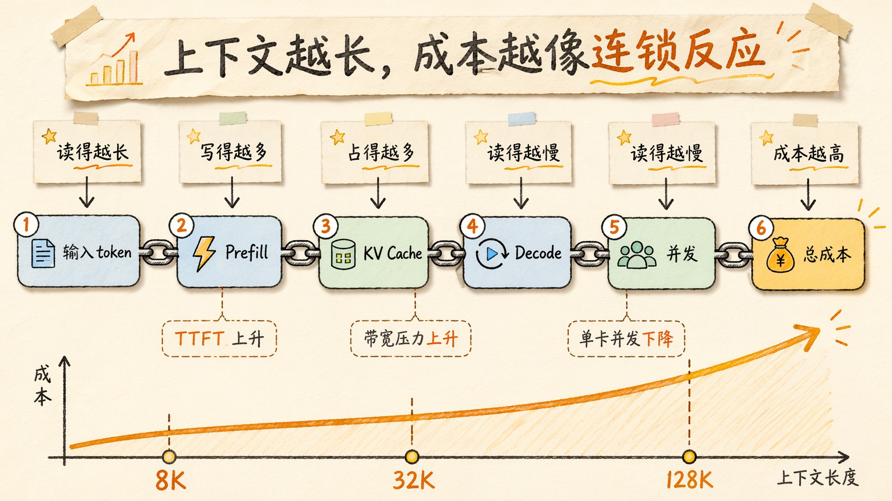
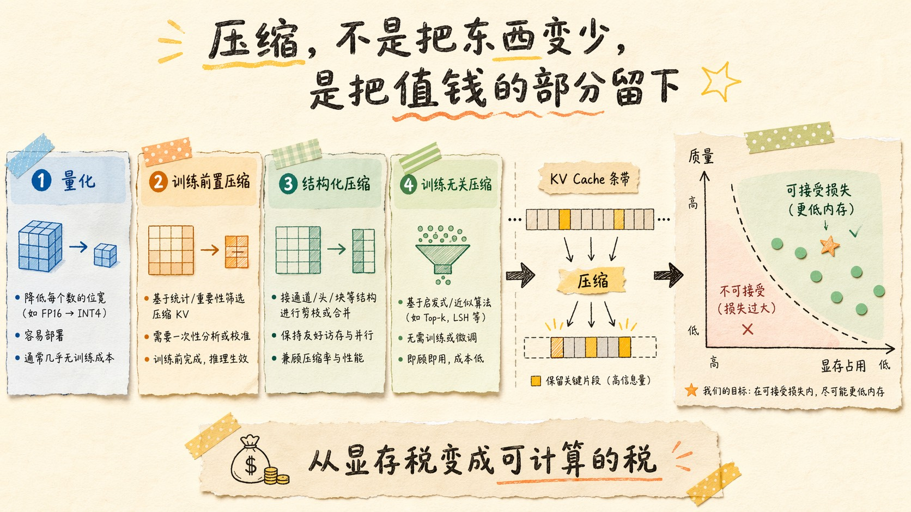
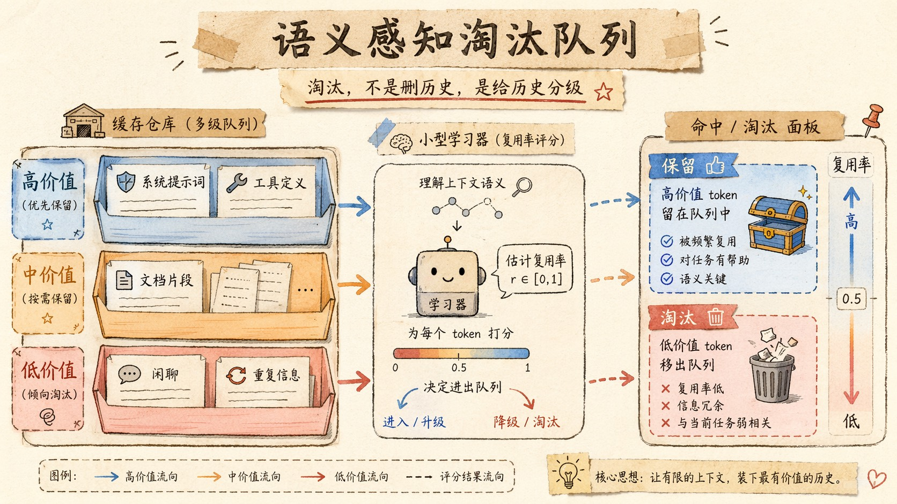
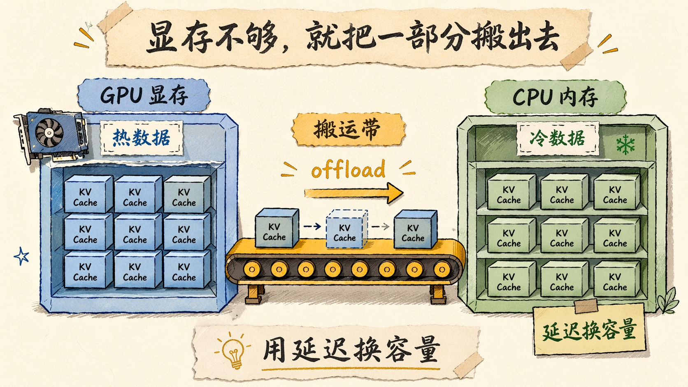
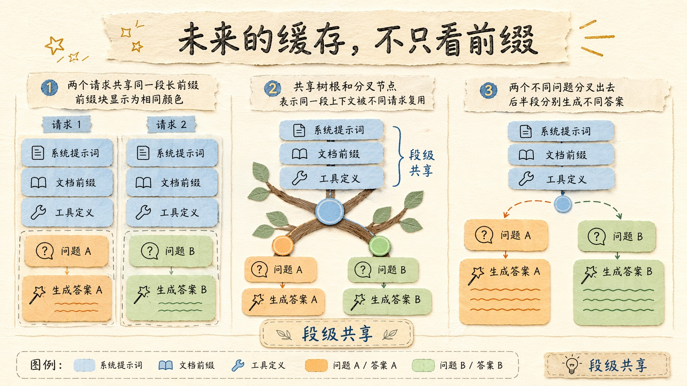

长上下文到底贵在哪里？KV Cache 压缩、淘汰和 Offload 全景拆解
这两年大模型最容易把人带偏的一件事，就是上下文窗口越报越大，大家就越容易产生一种错觉，上下文好像是免费的。
128K。
200K。
1M。
这些数字看上去都很爽，像是模型终于学会记东西了。你把资料全塞进去，它就能一口气读完、分析完、回答完。
但只要你自己真去做长上下文应用，很快就会撞上一堵墙。
不是模型看不懂。
是它太贵了。
贵的不是那个 token 数字本身，贵的是每个 token 背后都要付出的 KV Cache、显存带宽、批处理容量、缓存命中率，还有被你浪费掉的那些前缀复用机会。
说得再直白一点，长上下文真正卖命的地方，不是模型能不能读进去，而是你能不能把读进去的东西留住、压缩掉、复用起来，或者在不出错的前提下，干脆把它放到别的地方去。
这个问题，才是长上下文时代真正的钱包杀手。

上下文变长以后，贵的不是输入，是后遗症
我第一次对这个问题有体感，是在一个多轮 Agent 里。
前面几轮还挺正常，到了第六轮、第七轮，用户开始贴文档，贴代码，贴表格，贴一大堆历史对话。你原来觉得挺聪明的模型，突然变得越来越慢，越来越贵，最后甚至开始胡说八道。
你以为它是状态变差了。
其实很多时候不是。
它只是被你撑爆了。
长上下文的成本，通常不是一个线性小账，而是三个一起爆。
第一笔，Prefill 成本。
上下文越长，模型在开始输出前要读的 token 就越多。Prefill 阶段所有输入 token 都要过一遍模型，这部分直接拉高 TTFT。
第二笔，Decode 成本。
上下文越长，后续每生成一个 token，都要回看更长的历史 KV Cache。Decode 阶段不只是算，还要读显存。上下文一长，这笔带宽税就开始变得很疼。
第三笔，系统成本。
缓存越长，占的显存越多，单卡并发就越低。并发一低，调度器就更难把 GPU 喂饱。GPU 一旦喂不满，你的单次请求成本就开始抬头。
所以长上下文不是一个单点问题。
它是一个连锁反应。
输入更长，缓存更大，读写更慢，并发更低，成本更高。
很像一座房子越盖越大，最后发现最大的花销不是建材，是物业和水电。

KV Cache 为什么会把人逼到显存墙角
长上下文贵，核心还是 KV Cache。
Transformer 在推理时，每一层都会把每个 token 的 Key 和 Value 存下来。因为后续生成的时候，这些历史 token 不需要重新算一遍，直接拿来做 attention 就行。
这个设计本来是省算力的。
问题是，它把成本挪到了显存。
而且是线性挪。
上下文长度翻倍，KV Cache 也差不多翻倍。层数越深，头数越多，维度越大，显存压力越明显。你把上下文从 8K 拉到 128K，缓存不是“稍微大一点”，而是直接变成另一种量级。
这就是为什么很多服务在短上下文时看起来很稳，一旦用户开始塞长文档、长聊天记录、长代码仓库，系统就开始抖。
因为你不是在多读一点上下文。
你是在同时给显存、带宽、调度、并发四个地方一起加负担。
KV Cache 的问题也很残酷。它不是存一次就完事，它是“活的内存”。
用户每生成一个 token，缓存就要跟着增长。长对话、长文档、长链路推理，都会让它一路膨胀。你只要不做管理，它就会把你的 GPU 吃干净。
这也是为什么大模型长上下文优化，最后绕不开三个词。
压缩。
淘汰。
Offload。

压缩，不是把东西变少，是把“值钱的部分”留下
最直觉的办法当然是压缩 KV Cache。
可问题来了，KV 不是 JPEG。
你不能简单地把它糊一糊，因为它不是图像，而是模型内部用于注意力计算的中间表示。压缩太狠，回答质量就掉，轻一点，显存又省不出多少。
现在主流的思路，大致有四类。
第一类是量化。
把 KV 从高精度压到低精度，比如 8bit、4bit、2bit。KIVI 就是很典型的工作，它分析了 K 和 V 的分布不同，提出 K 用 per-channel、V 用 per-token 的非对称 2bit 量化。它的结果很直接，能把峰值显存压下来，同时保持相当不错的质量。FastKV 后面又把这个方向往更偏速度的地方推了一步，强调 Token-Selective Propagation 和 GQA-aware 的压缩，让 TTFT 和吞吐都能受益。
第二类是训练前置压缩。
不是等模型训完再硬压，而是训练的时候就把表示学得更可压一点。2026 年的 KV-CAT 就是这个方向，核心思路很朴素，既然你知道后面要压缩，那训练时就让模型自己长出更容易压的表示。
第三类是结构化压缩。
DeepSeek 的 MLA 其实也是这个方向的一种代表，它不是把 KV 事后压成更低 bit，而是直接把“要缓存的表示”换成更小的潜变量。它压的不是字节，是结构。这个思路更像重设计表示空间，而不是把现有表示拿去打补丁。
第四类是训练无关压缩的新路线。
比如 Google 最近的 TurboQuant，直接把 KV cache 压到更低 bit，而且强调不需要训练或微调。它的价值不只是省内存，而是省掉了工程团队最讨厌的那部分迁移成本。
这些方法里，最容易被误解的一点是，压缩的目标不是“越小越好”。
真正的目标是，在可接受的质量损失下，把长上下文从显存税，变成可计算的税。
也就是说，先让它别把你卡死。
然后再谈别的。
淘汰，不是删历史，是给历史分级
压缩只是第一步。
因为不是所有 token 都值得一直留着。
你认真想一下，一个长对话里，真正反复被用到的东西，往往不是每一句闲聊，而是那些高价值片段。
系统提示词。
工具定义。
任务目标。
关键文档。
某些刚刚生成过的回答。
而一些中间废话，重复寒暄，已经被总结过的边角信息，其实价值很低。
所以第二个大方向，是淘汰。
这不是随便丢，而是根据 reuse probability、语义价值、位置、任务类型来决定哪些块可以先退场。
2026 年的 SAECache 就很典型，它直接指出，不是所有 token 都值得缓存，不同 token 类型的复用率可以差到几个数量级。它用语义感知的多队列和在线学习去做 eviction，目标就是让缓存更像“聪明的仓库”，而不是“什么都往里塞的垃圾桶”。
SparseX 也是同一类思路，只不过它更进一步，关注的不只是前缀重复，而是段级别、交错式、跨请求的共享。也就是说，真实应用里，重复内容不一定只出现在最开头，很多时候它藏在文档片段、历史引用和多轮对话的中间。SparseX 试图把这些也吃进复用范围里。
这类方法的本质都差不多。
把缓存从“按顺序记忆”，变成“按价值保留”。
你不能让 GPU 显存像一个没有边界的回收站。
它必须有优先级。
必须能告诉自己，哪些 token 真值得活下来。

Offload，显存不够就把一部分搬出去
如果压缩和淘汰都不够，那就只能考虑 Offload。
简单说，就是把一部分 KV Cache 从 GPU 显存搬到 CPU，甚至更远的存储上。等真的要用，再搬回来。
这件事一听就很像“把东西塞阁楼”。
短期看，空间腾出来了。
长期看，搬上搬下很麻烦。
所以 Offload 的核心矛盾就一个，用延迟换容量。
它有用，但不优雅。

而且在长上下文场景下，Offload 通常不是独立解决方案，而是和压缩、淘汰一起配合。
比如先把最不值钱的缓存踢出去。
再把剩下的部分压缩。
实在放不下的，才考虑放到 CPU。
这就是为什么长上下文系统经常看起来像一个层层加保险的仓库。
GPU 里放最热的。
CPU 里放次热的。
更冷的先去掉。
再不行就再压一点。
近两年的研究也在往这个方向加码。KIVI 证明了低 bit 量化能显著降低峰值内存。FastKV 证明了压缩还能带来 TTFT 和 throughput 的实际收益。TurboQuant 则把“能不能不训练直接压”这个问题往前推了一大步。它们拼在一起，说明长上下文优化的目标已经不再是单纯省内存，而是把“省内存”翻译成“能跑更多请求，能更快出第一个字，能让系统别炸”。
为什么前缀缓存越来越重要
长上下文的另一个现实问题，是很多请求其实不是完全新的。
尤其是 Agent、RAG、代码助手、文档问答这些场景。
系统提示词重复。
工具定义重复。
知识库片段重复。
甚至用户每次问的问题，背后共享的背景也常常差不多。
这时候，前缀缓存的价值就变得很高。
vLLM 的 PagedAttention 先解决的是物理内存管理问题，但它很自然地支持了前缀复用；SGLang 的 RadixAttention 则直接把多次生成调用之间的 KV reuse 做成了系统级优化。SGLang 的论文把这件事讲得很明确，复杂语言模型程序的高效执行，离不开 KV cache reuse 和结构化输出优化。
更有意思的是，2026 年的几篇工作已经开始绕开“必须是前缀一致”这个限制了。MiniPIC、PrefillShare、SparseX 都在尝试更灵活的共享方式，说明真实生产里，重复内容根本不会老老实实排在开头。它可能是一个长文档的一段，可能是多 Agent 共享的一段上下文，也可能是某个工具输出的一段结构化块。
这其实意味着一件事。
未来的缓存系统，不会只问“是不是同一个前缀”。
它会问“是不是同一段有价值的信息”。
这个判断，比前缀一致性更接近真实工作负载。

你以为是长上下文，其实是复用率的问题
如果把长上下文成本再往下拆，会发现一个很反直觉的现象。
真正把系统拖垮的，很多时候不是上下文窗口大，而是复用率低。
同样 128K token，有的场景几乎全是一次性内容，读完就扔，缓存命中很差。
有的场景则高度重复，系统提示词、工具 schema、文档片段、历史回答都在反复复用。
前者就是显存黑洞。
后者则是可以被精细优化的高价值工作负载。
所以长上下文系统设计最重要的一件事，不是盲目追求更大窗口，而是问自己，
这堆 token 里，哪些真的会被再次使用？
哪些只会被读一次？
哪些值得压缩？
哪些该淘汰？
哪些应该 offload？
哪些应该前缀缓存？
这几个问题，决定你是在做长上下文应用，还是在把显存当垃圾桶烧。
做应用的人该怎么想
如果你是应用开发者，不是做底层引擎的人，这些技术听起来可能离你很远。
其实不远。
因为你每天写的 Prompt，就在决定缓存效率。
你每次加的 System Prompt，都在决定前缀复用率。
你每次往上下文里塞的文档，都在决定 Prefill 的成本。
你每次把几百行无关历史一起丢进去，都在决定后面的 TTFT 和 TPOT。
所以几个很朴素的建议，往往比你想象中更值钱。
第一，固定前缀要稳定。
别一会儿加时间戳，一会儿加随机字段，一会儿把工具列表重排。
你这么一改，前缀缓存就碎了。
第二，动态内容往后放。
把可复用的系统层内容放前面，用户当次输入和检索结果放后面。这样缓存命中率才高。
第三，尽量把长上下文变成可切块的结构。
别把所有东西都揉成一锅粥。
文档、表格、代码、工具输出，尽量保留边界。这样未来不管是做段级缓存、语义缓存，还是更激进的共享机制，才有空间。
第四，别迷信“更大窗口”这件事。
更大窗口是能力，不是免费午餐。
你得付 KV Cache 的账。
你得付带宽的账。
你得付并发的账。
而且这些账，有时候比 token 本身更贵。
写在最后
长上下文真正教会我的一件事是，模型记得住，不代表系统扛得住。
窗口越大，工程越不该天真。
你不能只问它能不能读 128K，你还得问它怎么存、怎么复用、怎么压、怎么丢、怎么搬。
只要你做的是 Agent、RAG、文档问答、代码助手、多轮分析，这些问题都绕不开。
未来长上下文会越来越常见。
但真正把它做成产品的人，不是最会喊窗口大的人，而是最会算 KV Cache 账的人。
上层看起来只是“塞进去更多上下文”。
底层其实是在做一整套缓存金融学。
把每个 token 当资产。
把每次 Prefill 当成本。
把每个缓存块当仓位。
把复用率当收益率。
这套账，最后还是要有人来算。
以上，既然看到这里了，如果觉得不错，随手点个赞、在看、转发三连吧，如果想第一时间收到推送，也可以给我个星标⭐~
谢谢你看我的文章，我们，下次再见。
/ 参考资料
KIVI: A Tuning-Free Asymmetric 2bit Quantization for KV Cache, 2024
FastKV: KV Cache Compression for Fast Long-Context Processing with Token-Selective Propagation, 2025
DeltaKV: Residual-Based KV Cache Compression via Long-Range Similarity, 2026
Training Transformers for KV Cache Compressibility, 2026
TurboQuant 相关公开材料, 2026
PagedAttention: Efficient Memory Management for Large Language Model Serving, 2023
SAECache: Not All Tokens Are Worth Caching, 2026
SparseX: Efficient Segment-Level KV Cache Sharing for Interleaved LLM Serving, 2026
MiniPIC: Flexible Position-Independent Caching in <100LOC, 2026